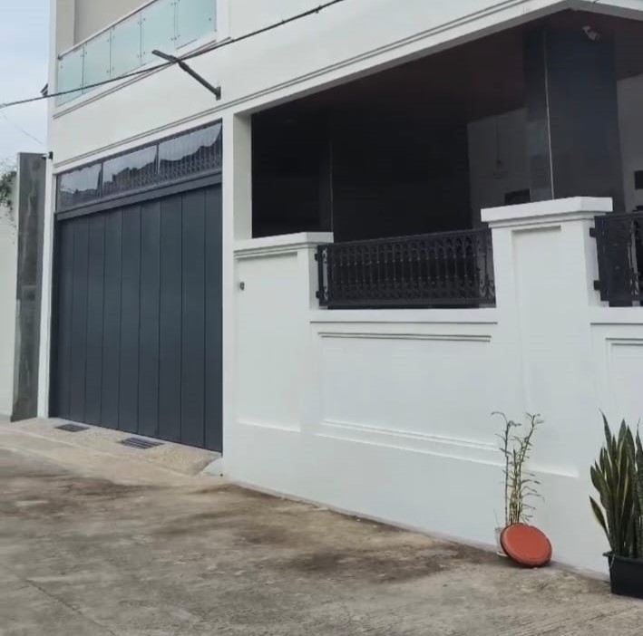
Hasil Kerja Pintu Henderson dan Ornamen.
Pengerjaan Pintu Henderson berukuran tinggi dan ornamen yang rapih.

Proses Pengerjaan Pintu Henderson
Proses yang dilakukan oleh tenaga kerja teruji dan terlatih

gerbang custom
penggunaan plat untuk gerbang untuk privasi yang lebih ketat dan estetika.
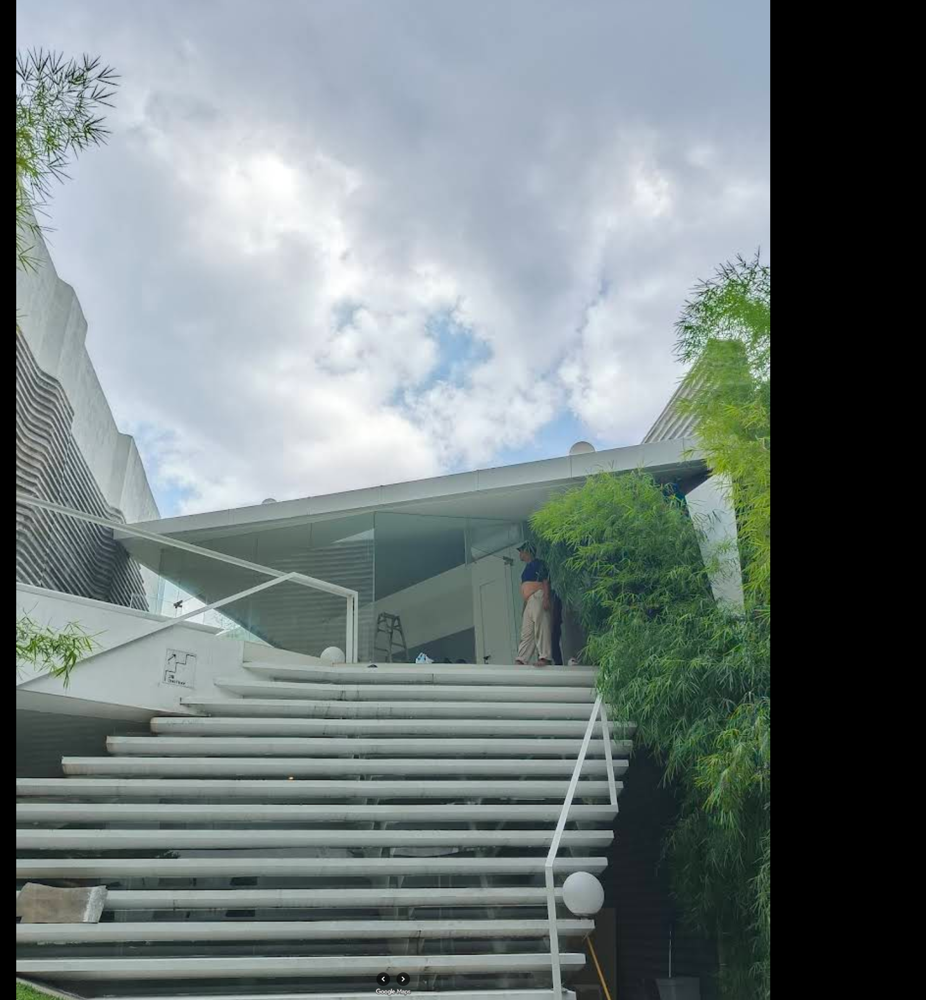
Hasil kerja railing dan tangga besi untuk fungsional dan estetika
Dikerjakan langsung oleh tenaga profesional.
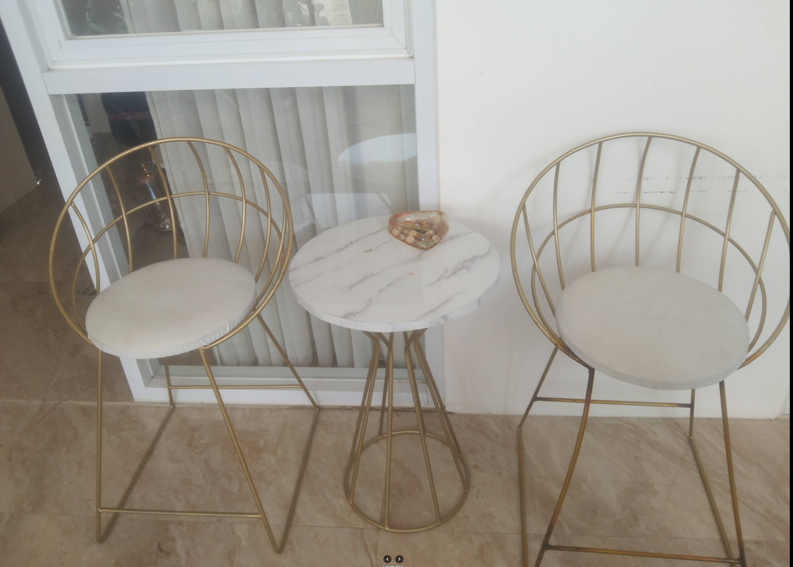
Meja dan Kursi Customs
Model custom dengan detail premium.
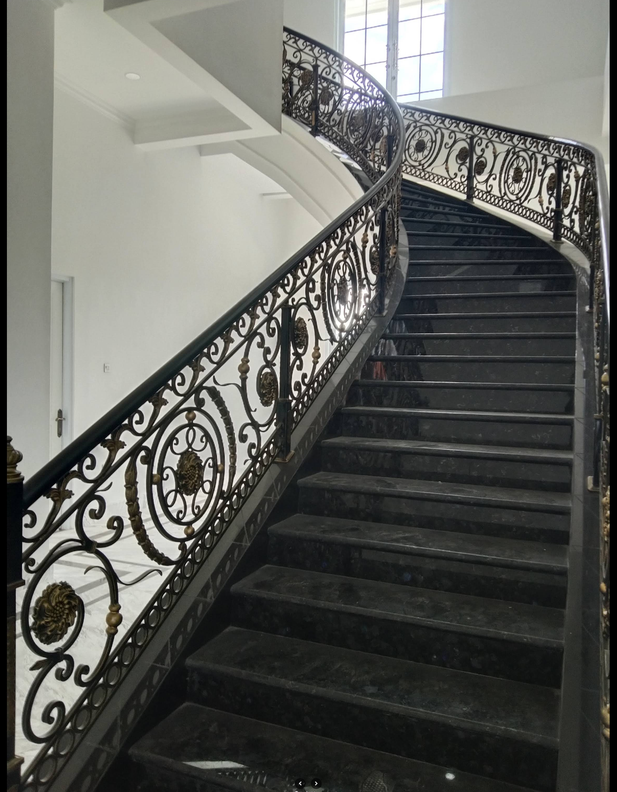
Railing Tangga Klasik
Penggunaan material yang solid dan keindahan yang dihasilkan dari lekukan yang rumit ala ala mediteranian.
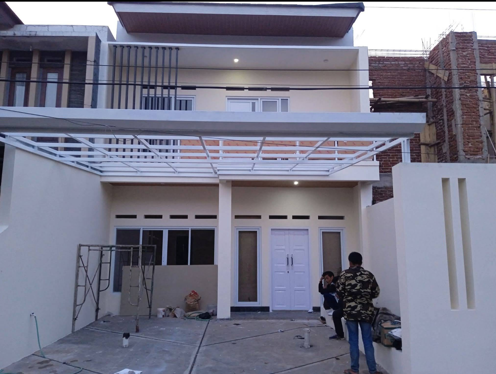
Hasil Kerja Kanopi Dan Railing Balkon Minimalis
Pengerjaan exterior konsep modern minimalis.
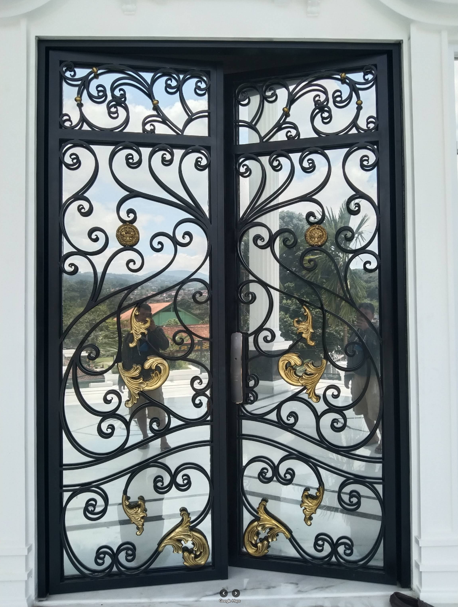
Double Door Besi Klasik
Desain seperti ini sangat populer untuk rumah bergaya Klasik Modern atau American Classic.
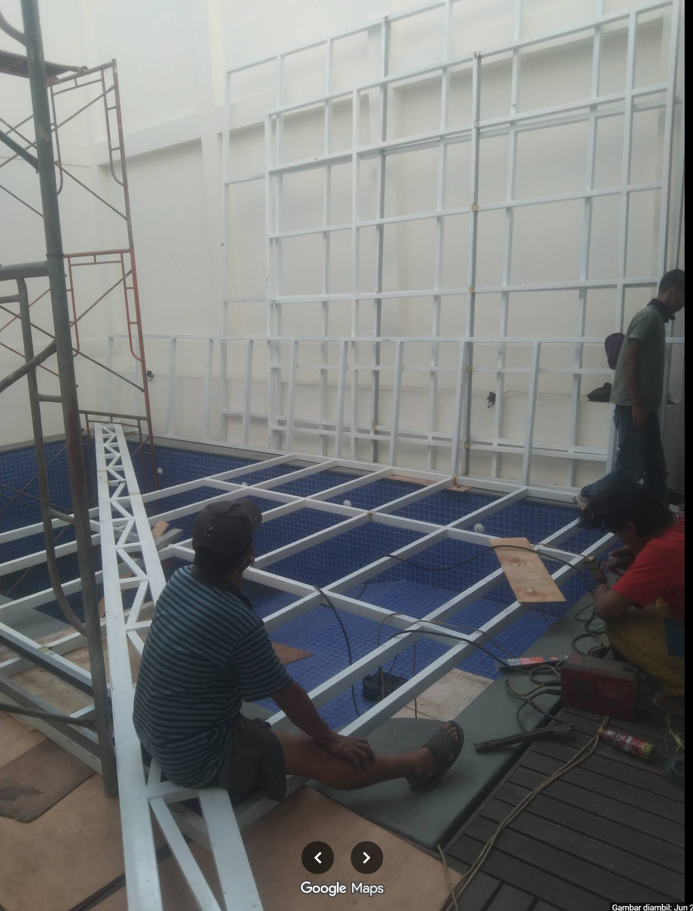
Proses Pengerjaan Kanopi Kontrol Remote
Proses pemasangan kanopi dengan fitur bukaan remot.
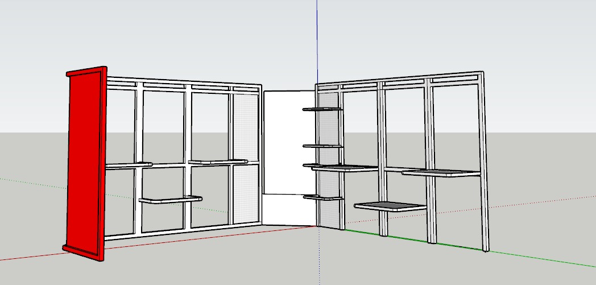
Hasil Konsultasi dan 3D Prototyping.
Hasil gambar sebagai visualisasi konsumen dengan 3D Prototpe digital.
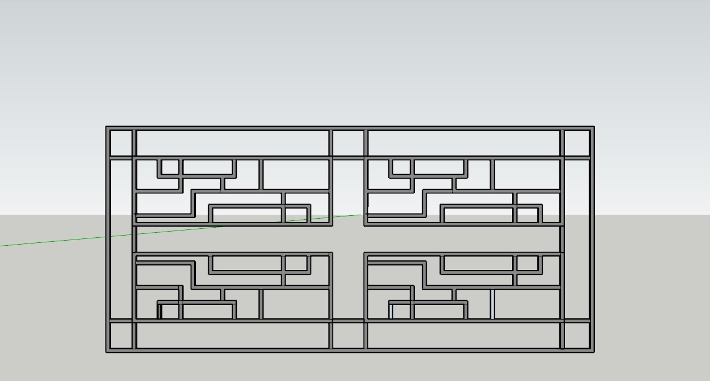
Hasil Konsultasi dan 3D Prototyping.
Hasil gambar sebagai visualisasi konsumen dengan 3D Prototpe digital.
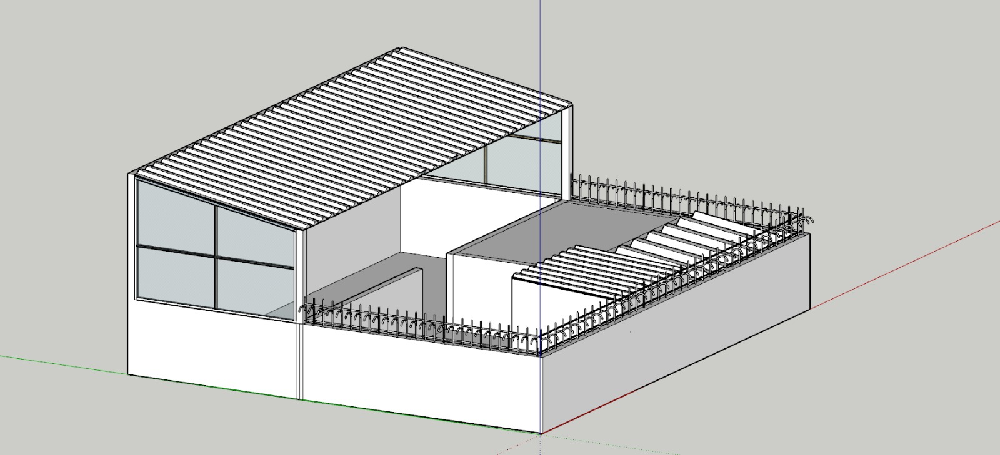
Hasil Konsultasi dan 3D Prototyping.
Hasil gambar sebagai visualisasi konsumen dengan 3D Prototpe digital.
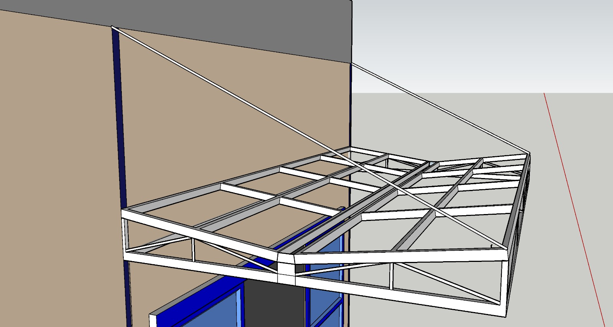
Hasil Konsultasi dan 3D Prototyping.
Hasil gambar sebagai visualisasi konsumen dengan 3D Prototpe digital.
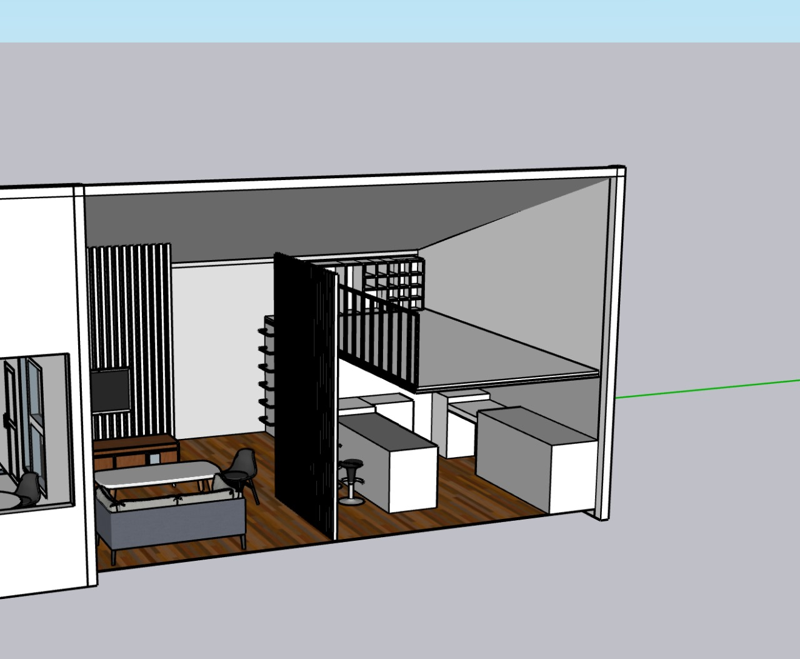
Hasil Konsultasi dan 3D Prototyping.
Hasil gambar sebagai visualisasi konsumen dengan 3D Prototpe digital.
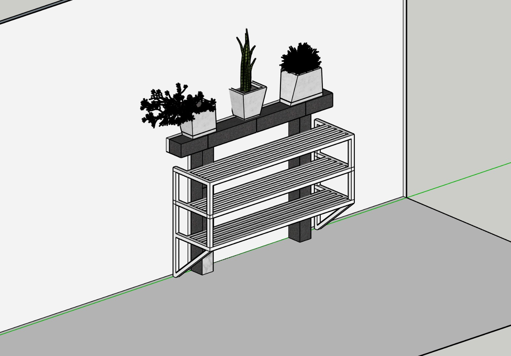
Hasil Konsultasi dan 3D Prototyping.
Hasil gambar sebagai visualisasi konsumen dengan 3D Prototpe digital.
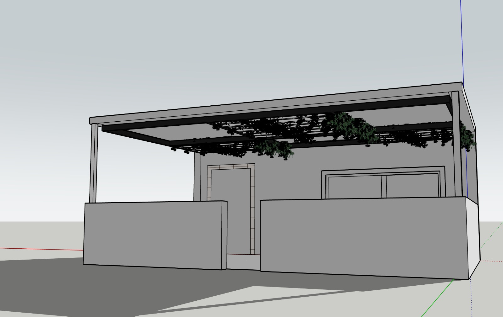
Hasil Konsultasi dan 3D Prototyping.
Hasil gambar sebagai visualisasi konsumen dengan 3D Prototpe digital.
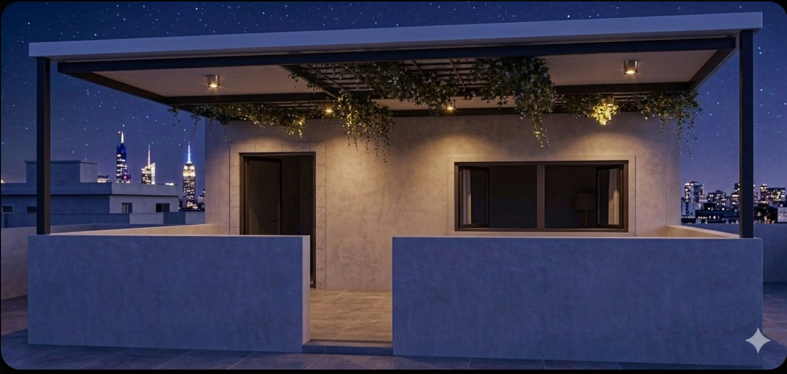
Hasil Konsultasi dan 3D Prototyping.
Hasil gambar sebagai visualisasi konsumen dengan 3D Prototpe digital.